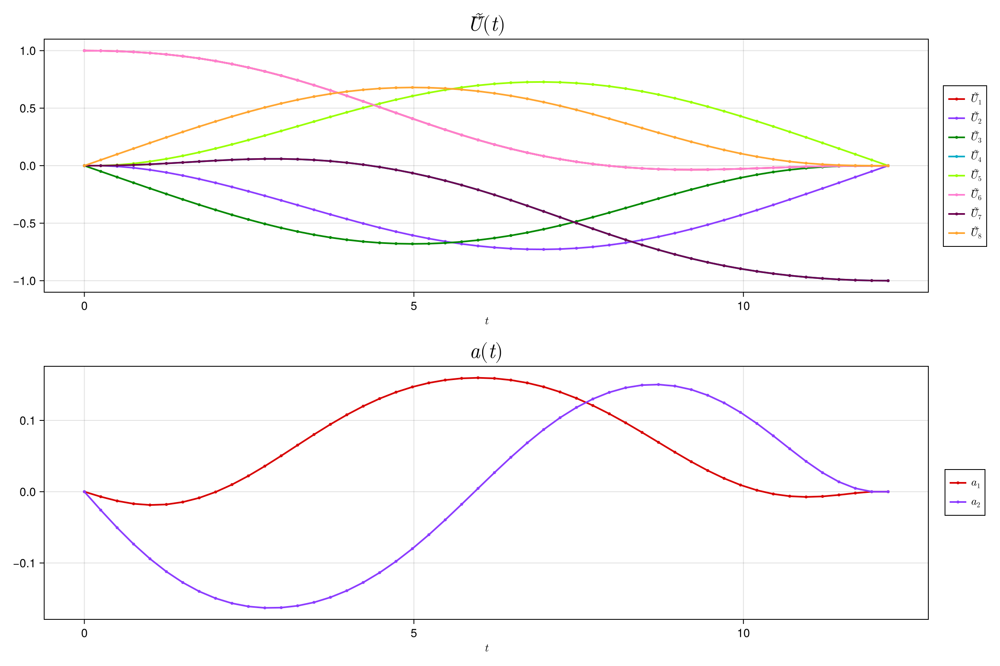
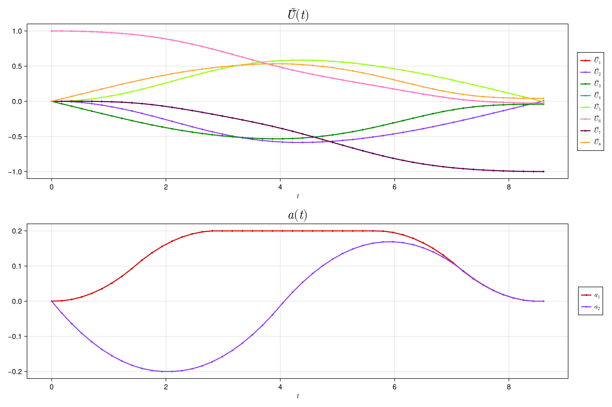

pretty_print(X::AbstractMatrix) = Base.show(stdout, "text/plain", X); # Helper functionQuickstart Guide
To set up and solve a quantum optimal control problems we provide high level problem templates to quickly get started. For unitary gate problems, where we want to realize a gate $U_{\text{goal}}$, with a system Hamiltonian of the form,
\[H(t) = H_0 + \sum_i a^i(t) H_i\]
there is the UnitarySmoothPulseProblem constructor which only requires
- the drift Hamiltonian, $H_0$
- the drive Hamiltonians, $\qty{H_i}$
- the target unitary, $U_{\text{goal}}$
- the number of timesteps, $T$
- the (initial) time step size, $\Delta t$
Smooth Pulse Problems
For example, to create a problem for a single qubit $X$ gate (with a bound on the drive of $|a^i| < a_{\text{bound}}$), i.e., with system hamiltonian
\[H(t) = \frac{\omega}{2} \sigma_z + a^1(t) \sigma_x + a^2(t) \sigma_y\]
we can do the following:
using Piccolo
# set time parameters
T = 50
Δt = 0.2
# define drift and drive Hamiltonians
H_drift = 0.2 * PAULIS.Z
H_drives = [PAULIS.X, PAULIS.Y]
# create a QuantumSystem from the Hamiltonians
system = QuantumSystem(H_drift, H_drives)
# define target unitary
U_goal = GATES.X
# set bounds on the drive
a_bound = 0.2
dda_bound = 0.1
# build the problem
prob = UnitarySmoothPulseProblem(
system,
U_goal,
T,
Δt;
a_bound = a_bound,
dda_bound = dda_bound,
)
# solve the problem
solve!(prob; max_iter = 50) building dynamics from integrators...
constructing knot point dynamics functions...
determining dynamics derivative structure...
computing jacobian sparsity...
creating full trajectory jacobian structure...
constructing full dynamics derivative functions...
building evaluator...
initializing optimizer...
applying constraint: initial value of Ũ⃗
applying constraint: initial value of a
applying constraint: final value of a
applying constraint: bounds on a
applying constraint: bounds on da
applying constraint: bounds on dda
applying constraint: bounds on Δt
applying constraint: time step all equal constraint
This is Ipopt version 3.14.17, running with linear solver MUMPS 5.7.3.
Number of nonzeros in equality constraint Jacobian...: 5122
Number of nonzeros in inequality constraint Jacobian.: 0
Number of nonzeros in Lagrangian Hessian.............: 0
Total number of variables............................: 736
variables with only lower bounds: 0
variables with lower and upper bounds: 244
variables with only upper bounds: 0
Total number of equality constraints.................: 637
Total number of inequality constraints...............: 0
inequality constraints with only lower bounds: 0
inequality constraints with lower and upper bounds: 0
inequality constraints with only upper bounds: 0
iter objective inf_pr inf_du lg(mu) ||d|| lg(rg) alpha_du alpha_pr ls
0 5.6307135e-04 3.97e-01 5.90e-05 0.0 0.00e+00 - 0.00e+00 0.00e+00 0
1 5.4190138e+01 5.43e-02 3.72e+01 -0.9 1.08e+00 - 2.76e-02 9.87e-01h 1
2 4.6308351e+01 3.68e-02 3.04e+01 -0.6 1.30e+00 - 1.00e+00 4.81e-01f 1
3 1.6973036e+01 1.94e-02 3.03e+01 -0.7 7.50e-01 - 9.90e-01 4.76e-01f 1
4 1.4300626e+01 9.40e-03 8.29e+01 -0.9 7.64e-01 - 9.96e-01 9.50e-01h 1
5 7.4610678e+00 6.94e-03 6.21e+01 -0.6 2.99e-01 - 5.79e-01 2.52e-01f 1
6 1.2267991e+01 5.40e-03 7.33e+01 -1.1 4.51e-01 - 4.98e-01 5.69e-01h 1
7 1.7065490e-01 3.24e-03 4.49e+01 -1.1 3.09e-01 - 9.99e-01 1.00e+00f 1
8 6.0996265e+00 8.75e-05 4.33e+01 -2.1 6.27e-02 - 1.00e+00 1.00e+00h 1
9 3.8925630e+00 1.21e-04 4.48e+01 -2.8 5.06e-02 - 1.00e+00 1.00e+00f 1
iter objective inf_pr inf_du lg(mu) ||d|| lg(rg) alpha_du alpha_pr ls
10 1.4983946e+00 1.15e-03 4.17e+01 -0.9 2.23e+00 - 1.00e+00 6.93e-02f 1
11 1.0833803e+00 5.76e-04 9.08e+01 -1.1 3.01e-01 - 1.00e+00 7.50e-01H 1
12 4.5664490e-01 6.33e-04 5.04e+01 -1.8 1.94e-01 - 1.00e+00 5.00e-01f 2
13 4.4934791e-01 4.84e-04 5.04e+01 -1.5 1.09e-01 - 1.00e+00 1.00e+00f 1
14 2.1162469e-02 3.84e-05 7.46e+01 -2.1 3.12e-02 - 1.00e+00 1.00e+00f 1
15 4.6622144e-01 3.47e-05 9.29e+01 -2.7 6.07e-02 - 1.00e+00 1.00e+00H 1
16 1.2824669e-01 1.12e-04 7.25e+01 -2.4 3.40e-02 - 1.00e+00 1.00e+00f 1
17 8.2158238e-02 2.49e-04 2.43e+01 -2.5 2.07e-01 - 4.76e-01 2.27e-01f 3
18 1.8287871e-01 2.35e-04 3.44e+01 -2.5 9.58e-02 - 9.98e-01 7.54e-01H 1
19 9.2460686e-02 5.68e-05 5.16e+01 -2.5 6.16e-02 - 1.00e+00 1.00e+00f 1
iter objective inf_pr inf_du lg(mu) ||d|| lg(rg) alpha_du alpha_pr ls
20 4.7278228e-04 4.73e-05 4.92e+01 -2.7 2.48e-02 - 1.00e+00 1.00e+00f 1
21 4.7454281e-04 4.73e-05 5.08e+01 -2.0 1.41e+00 - 1.00e+00 2.10e-05h 14
22 4.2800931e-04 1.24e-05 5.31e+01 -2.1 1.65e-02 - 1.00e+00 1.00e+00h 1
23 4.5994849e-04 7.54e-06 5.18e+01 -3.3 1.19e-02 - 1.00e+00 1.00e+00h 1
24 4.3009438e-04 4.75e-06 5.06e+01 -4.0 1.45e-02 - 1.00e+00 1.00e+00h 1
25 5.4442265e-04 2.42e-05 4.86e+01 -3.7 8.68e-02 - 1.00e+00 5.00e-01h 2
26 4.7473325e-04 5.23e-06 4.89e+01 -3.8 1.83e-02 - 1.00e+00 1.00e+00h 1
27 4.5406236e-04 7.62e-06 5.03e+01 -3.8 1.87e-02 - 1.00e+00 5.00e-01h 2
28 4.2105104e-04 7.08e-06 5.09e+01 -3.8 8.87e-03 - 1.00e+00 1.00e+00h 1
29 4.3034760e-04 6.99e-06 4.91e+01 -3.8 8.52e-02 - 1.00e+00 1.56e-02h 7
iter objective inf_pr inf_du lg(mu) ||d|| lg(rg) alpha_du alpha_pr ls
30 4.1471068e-04 1.17e-05 4.90e+01 -3.8 8.28e-03 - 1.00e+00 1.00e+00h 1
31 4.1667111e-04 9.46e-07 5.11e+01 -4.0 3.42e-03 - 1.00e+00 1.00e+00h 1
32 4.0963836e-04 1.12e-05 4.85e+01 -4.0 8.49e-03 - 1.00e+00 1.00e+00h 1
33 4.1563562e-04 1.22e-06 5.13e+01 -4.1 4.20e-03 - 1.00e+00 1.00e+00h 1
34 4.1208956e-04 3.84e-06 5.11e+01 -4.1 7.16e-03 - 1.00e+00 1.00e+00h 1
35 4.0851137e-04 3.97e-06 4.84e+01 -4.1 4.14e-03 - 1.00e+00 1.00e+00h 1
36 4.1304859e-04 1.30e-06 5.21e+01 -4.1 4.04e-03 - 1.00e+00 1.00e+00h 1
37 4.1063139e-04 5.21e-07 5.17e+01 -4.1 2.83e-03 - 1.00e+00 1.00e+00h 1
38 4.1349539e-04 2.30e-06 4.54e+01 -4.0 5.61e-03 - 1.00e+00 1.00e+00h 1
39 4.0933491e-04 8.26e-07 4.75e+01 -4.1 2.90e-03 - 1.00e+00 1.00e+00h 1
iter objective inf_pr inf_du lg(mu) ||d|| lg(rg) alpha_du alpha_pr ls
40 4.1198410e-04 3.14e-07 5.17e+01 -4.1 1.82e-03 - 1.00e+00 1.00e+00h 1
41 4.1127838e-04 2.58e-07 5.20e+01 -4.0 2.37e-03 - 1.00e+00 2.50e-01h 3
42 4.0815403e-04 2.51e-07 4.76e+01 -4.1 4.88e-03 - 1.00e+00 2.50e-01h 3
43 4.0875847e-04 3.48e-07 5.22e+01 -4.1 1.32e-03 - 1.00e+00 1.00e+00h 1
44 4.0902309e-04 3.42e-08 4.67e+01 -4.1 7.97e-04 - 1.00e+00 1.00e+00h 1
45 4.0911880e-04 1.01e-07 4.55e+01 -4.0 1.22e-03 - 1.00e+00 5.00e-01h 2
46 4.0888893e-04 3.45e-08 5.71e+01 -4.1 6.44e-04 - 1.00e+00 1.00e+00h 1
47 4.0903370e-04 1.80e-08 4.23e+01 -4.1 3.65e-04 - 1.00e+00 1.00e+00h 1
48 4.1323924e-04 3.43e-06 4.53e+01 -4.1 5.06e-03 - 1.00e+00 1.00e+00h 1
49 4.1031905e-04 3.14e-06 5.45e+01 -4.1 3.95e-03 - 1.00e+00 1.00e+00h 1
iter objective inf_pr inf_du lg(mu) ||d|| lg(rg) alpha_du alpha_pr ls
50 4.0843322e-04 3.44e-07 4.71e+01 -4.1 2.26e-03 - 1.00e+00 1.00e+00h 1
Number of Iterations....: 50
(scaled) (unscaled)
Objective...............: 4.0843322408587202e-04 4.0843322408587202e-04
Dual infeasibility......: 4.7126828209960841e+01 4.7126828209960841e+01
Constraint violation....: 3.4382786895381656e-07 3.4382786895381656e-07
Variable bound violation: 0.0000000000000000e+00 0.0000000000000000e+00
Complementarity.........: 7.9999652554414087e-05 7.9999652554414087e-05
Overall NLP error.......: 4.7126828209960841e+01 4.7126828209960841e+01
Number of objective function evaluations = 102
Number of objective gradient evaluations = 51
Number of equality constraint evaluations = 102
Number of inequality constraint evaluations = 0
Number of equality constraint Jacobian evaluations = 51
Number of inequality constraint Jacobian evaluations = 0
Number of Lagrangian Hessian evaluations = 0
Total seconds in IPOPT = 1.077
EXIT: Maximum Number of Iterations Exceeded.The above output comes from the Ipopt.jl solver. The problem's trajectory has been updated with the solution. We can see the final control amplitudes and the final unitary by accessing the a and Ũ⃗ fields of the trajectory.
size(prob.trajectory.a) |> println
size(prob.trajectory.Ũ⃗) |> println(2, 50)
(8, 50)The Ũ⃗ field is a vectorized representation of the unitary, which we can convert back to a matrix using the iso_vec_to_operator function exported by PiccoloQuantumObjects.jl.
iso_vec_to_operator(prob.trajectory.Ũ⃗[:, end]) |> pretty_print2×2 Matrix{ComplexF64}:
-0.00151467+2.97401e-5im -0.000126125-1.0im
0.000126125-1.0im -0.00151467-2.97401e-5imTo see the final fidelity we can use the unitary_rollout_fidelity function exported by QuantumCollocation.jl.
println("Final fidelity: ", unitary_rollout_fidelity(prob.trajectory, system))Final fidelity: 0.9999988436345523We can also easily plot the solutions using the plot function exported by NamedTrajectories.jl.
plot(prob.trajectory, [:Ũ⃗, :a])
Minimum Time Problems
We can also easily set up and solve a minimum time problem, where we enforce a constraint on the final fidelity:
\[\mathcal{F}(U_T, U_{\text{goal}}) \geq \mathcal{F}_{\text{min}}\]
Using the problem we just solved we can do the following:
# final fidelity constraint
final_fidelity = 0.99
min_time_prob = UnitaryMinimumTimeProblem(prob, system; final_fidelity = final_fidelity)
solve!(min_time_prob; max_iter = 50) building dynamics from integrators...
constructing knot point dynamics functions...
determining dynamics derivative structure...
computing jacobian sparsity...
creating full trajectory jacobian structure...
constructing full dynamics derivative functions...
building evaluator...
initializing optimizer...
applying constraint: initial value of Ũ⃗
applying constraint: initial value of a
applying constraint: final value of a
applying constraint: bounds on a
applying constraint: bounds on da
applying constraint: bounds on dda
applying constraint: bounds on Δt
applying constraint: time step all equal constraint
This is Ipopt version 3.14.17, running with linear solver MUMPS 5.7.3.
Number of nonzeros in equality constraint Jacobian...: 5122
Number of nonzeros in inequality constraint Jacobian.: 4
Number of nonzeros in Lagrangian Hessian.............: 0
Total number of variables............................: 736
variables with only lower bounds: 0
variables with lower and upper bounds: 244
variables with only upper bounds: 0
Total number of equality constraints.................: 637
Total number of inequality constraints...............: 1
inequality constraints with only lower bounds: 1
inequality constraints with lower and upper bounds: 0
inequality constraints with only upper bounds: 0
iter objective inf_pr inf_du lg(mu) ||d|| lg(rg) alpha_du alpha_pr ls
0 1.2445103e+01 3.44e-07 1.98e-01 0.0 0.00e+00 - 0.00e+00 0.00e+00 0
1 1.1470600e+01 5.44e-04 1.71e+00 -1.7 6.98e-02 - 9.99e-01 1.00e+00f 1
2 1.0823428e+01 4.14e-04 2.09e+00 -2.3 7.23e-02 - 1.00e+00 6.97e-01f 1
3 9.5924064e+00 2.10e-03 1.00e+02 -2.0 2.79e-01 - 1.00e+00 3.72e-01f 1
4 1.0081008e+01 6.13e-04 5.00e+01 -1.7 1.31e-01 - 1.00e+00 1.00e+00f 1
5 9.5891673e+00 3.32e-04 4.23e+01 -2.0 1.02e-01 - 1.00e+00 1.00e+00f 1
6 9.3306667e+00 2.40e-04 7.13e+01 -2.4 1.14e-01 - 1.00e+00 5.44e-01f 1
7 8.9217202e+00 2.15e-04 2.13e+01 -2.7 6.83e-02 - 1.00e+00 9.59e-01f 1
8 9.2226330e+00 1.59e-04 5.51e-01 -2.3 3.64e-02 - 1.00e+00 1.00e+00h 1
9 9.0453266e+00 9.14e-05 1.97e+01 -2.8 2.26e-02 - 1.00e+00 1.00e+00h 1
iter objective inf_pr inf_du lg(mu) ||d|| lg(rg) alpha_du alpha_pr ls
10 8.9788842e+00 4.42e-05 1.45e+01 -3.3 2.38e-02 - 1.00e+00 7.27e-01h 1
11 8.9760668e+00 1.97e-05 4.27e+00 -3.0 2.61e-02 - 9.62e-01 1.00e+00h 1
12 8.9372568e+00 1.72e-05 4.38e+00 -3.4 1.51e-02 - 1.00e+00 9.37e-01h 1
13 8.9180037e+00 1.72e-05 2.34e+00 -4.0 2.27e-02 - 1.00e+00 6.97e-01h 1
14 8.9098777e+00 1.14e-05 6.85e-01 -4.0 3.47e-02 - 1.00e+00 7.08e-01h 1
15 8.9080567e+00 5.71e-06 3.19e-01 -4.0 6.16e-02 - 1.00e+00 5.35e-01h 1
16 8.9069605e+00 2.94e-06 1.49e-01 -4.0 5.60e-02 - 1.00e+00 6.63e-01h 1
17 8.9070487e+00 2.69e-07 8.48e-03 -4.0 9.86e-03 - 1.00e+00 1.00e+00h 1
18 8.9070900e+00 8.06e-09 1.63e-02 -4.0 9.18e-04 - 1.00e+00 1.00e+00h 1
19 8.9070916e+00 6.59e-10 1.06e-03 -4.0 2.31e-04 - 1.00e+00 1.00e+00h 1
iter objective inf_pr inf_du lg(mu) ||d|| lg(rg) alpha_du alpha_pr ls
20 8.9070915e+00 1.46e-11 1.07e-04 -4.0 3.01e-05 - 1.00e+00 1.00e+00h 1
21 8.9070914e+00 7.86e-13 9.07e-06 -4.0 1.07e-05 - 1.00e+00 1.00e+00h 1
22 8.9070914e+00 2.72e-13 1.73e-05 -4.0 7.20e-06 - 1.00e+00 1.00e+00h 1
23 8.9070913e+00 2.32e-14 4.85e-06 -4.0 3.29e-06 - 1.00e+00 1.00e+00h 1
24 8.9070913e+00 9.99e-16 1.15e-06 -4.0 7.32e-07 - 1.00e+00 1.00e+00h 1
25 8.9070913e+00 6.49e-16 3.40e-07 -4.0 5.23e-07 - 1.00e+00 1.00e+00h 1
26 8.9052892e+00 1.21e-07 7.78e-03 -4.1 2.76e-03 - 1.00e+00 1.00e+00f 1
27 8.9071006e+00 1.26e-07 5.12e-04 -4.0 2.88e-03 - 1.00e+00 1.00e+00h 1
28 8.9052185e+00 7.59e-08 1.52e-02 -4.1 4.40e-03 - 1.00e+00 1.00e+00h 1
29 8.9070881e+00 7.15e-08 2.10e-04 -4.0 4.33e-03 - 1.00e+00 1.00e+00h 1
iter objective inf_pr inf_du lg(mu) ||d|| lg(rg) alpha_du alpha_pr ls
30 8.9052224e+00 1.31e-07 5.56e-03 -4.1 4.29e-03 - 1.00e+00 1.00e+00h 1
31 8.9070904e+00 1.29e-07 3.72e-04 -4.0 4.19e-03 - 1.00e+00 1.00e+00h 1
32 8.9052089e+00 2.15e-07 1.88e-02 -4.1 4.71e-03 - 1.00e+00 1.00e+00h 1
33 8.9070778e+00 2.15e-07 5.17e-04 -4.0 4.68e-03 - 1.00e+00 1.00e+00h 1
34 8.9052254e+00 1.45e-07 1.27e-03 -4.1 4.12e-03 - 1.00e+00 1.00e+00h 1
35 8.9052259e+00 9.71e-09 1.41e-02 -4.1 1.07e-03 - 1.00e+00 1.00e+00h 1
36 8.9070770e+00 1.07e-07 3.92e-04 -4.0 4.06e-03 - 1.00e+00 1.00e+00h 1
37 8.9052253e+00 1.45e-07 8.41e-04 -4.1 4.09e-03 - 1.00e+00 1.00e+00h 1
38 8.9052258e+00 5.11e-09 1.66e-03 -4.1 4.74e-04 - 1.00e+00 1.00e+00h 1
39 8.9070907e+00 9.82e-08 2.00e-04 -4.0 4.08e-03 - 1.00e+00 1.00e+00f 1
iter objective inf_pr inf_du lg(mu) ||d|| lg(rg) alpha_du alpha_pr ls
40 8.9052254e+00 1.44e-07 4.68e-04 -4.1 4.08e-03 - 1.00e+00 1.00e+00h 1
41 8.8997306e+00 1.19e-06 3.29e-02 -6.1 1.64e-02 - 8.41e-01 7.43e-01f 1
42 8.9071098e+00 1.70e-06 5.69e-02 -4.0 1.84e-02 - 1.00e+00 1.00e+00f 1
43 8.9051110e+00 2.38e-07 4.30e-03 -4.1 1.05e-02 - 1.00e+00 1.00e+00h 1
44 8.9070839e+00 1.77e-07 1.29e-02 -4.0 3.86e-03 - 1.00e+00 1.00e+00h 1
45 8.9052177e+00 1.41e-07 1.03e-03 -4.1 4.02e-03 - 1.00e+00 1.00e+00h 1
46 8.9070928e+00 1.09e-07 2.51e-03 -4.0 4.10e-03 - 1.00e+00 1.00e+00h 1
47 8.9052227e+00 1.57e-07 4.99e-03 -4.1 4.12e-03 - 1.00e+00 1.00e+00h 1
48 8.9052067e+00 2.64e-07 1.42e-02 -4.1 3.16e-03 - 1.00e+00 1.00e+00h 1
49 8.9070613e+00 2.38e-07 5.43e-04 -4.0 5.79e-03 - 1.00e+00 1.00e+00h 1
iter objective inf_pr inf_du lg(mu) ||d|| lg(rg) alpha_du alpha_pr ls
50 8.9052243e+00 1.47e-07 1.26e-03 -4.1 4.19e-03 - 1.00e+00 1.00e+00h 1
Number of Iterations....: 50
(scaled) (unscaled)
Objective...............: 8.9052243181774813e+00 8.9052243181774813e+00
Dual infeasibility......: 1.2572142113679284e-03 1.2572142113679284e-03
Constraint violation....: 1.4681633351415480e-07 1.4681633351415480e-07
Variable bound violation: 0.0000000000000000e+00 0.0000000000000000e+00
Complementarity.........: 8.1035776262857080e-05 8.1035776262857080e-05
Overall NLP error.......: 1.2572142113679284e-03 1.2572142113679284e-03
Number of objective function evaluations = 51
Number of objective gradient evaluations = 51
Number of equality constraint evaluations = 51
Number of inequality constraint evaluations = 51
Number of equality constraint Jacobian evaluations = 51
Number of inequality constraint Jacobian evaluations = 51
Number of Lagrangian Hessian evaluations = 0
Total seconds in IPOPT = 2.008
EXIT: Maximum Number of Iterations Exceeded.We can see that the final fidelity is indeed greater than the minimum fidelity we set.
println("Final fidelity: ", unitary_rollout_fidelity(min_time_prob.trajectory, system))Final fidelity: 0.9987731385912759and that the duration of the pulse has decreased.
initial_duration = get_times(prob.trajectory)[end]
min_time_duration = get_times(min_time_prob.trajectory)[end]
println("Initial duration: ", initial_duration)
println("Minimum duration: ", min_time_duration)
println("Duration decrease: ", initial_duration - min_time_duration)
# We can also plot the solutions for the minimum time problem, and see that the control amplitudes saturate the bound.
plot(min_time_prob.trajectory, [:Ũ⃗, :a])
This page was generated using Literate.jl.